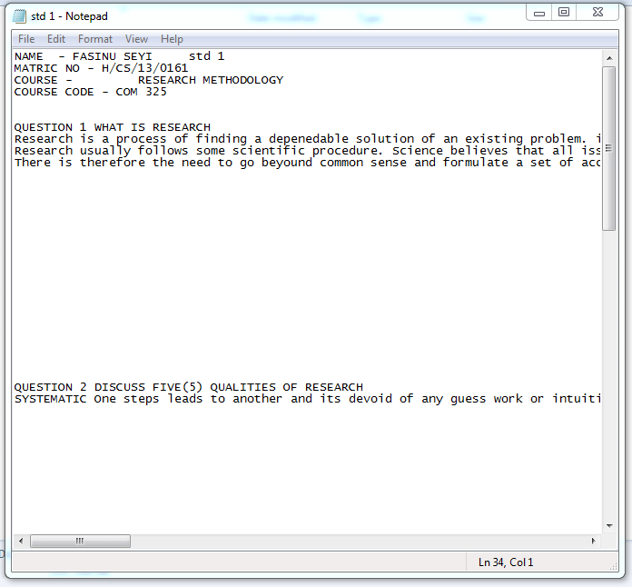

Design Patterns
I don't have a design philosophy; not because I don't want one, I just don’t quite understand the process of acquiring one. If 'design philosophy' refers to the set of principles, beliefs, and values that guide your approach to design — then I am a limbic creature, for I am guided by nothing more than intuition, coffee and the nearest dopamine hit. Nevertheless, I want to better understand why and how I make the things I do. In lieu of a design philosophy, I've been exploring what I call design patterns.
A design pattern is a set of repeated themes and choices that show up in the way your work is designed. These patterns manifest throughout all points of your process, and they collectively reveal the vision that informs your choices.
I like the idea of searching for my design patterns over figuring out my design philosophy, since patterns are tangible and capable of detection. Instead of establishing a vision[1] and making work that follows it, I find it easier to make things first and then let those things retrospectively reveal my vision to me.
Below are notes on the patterns that I have observed in my own website design approach.
1. Experiences as Inspiration
My inspiration often comes from an experience — one that has left me with a strong feeling or ambience, after which I am motivated to recreate that feeling in my own way. Although I turn to websites for interface ideas, the sites themselves rarely act as a catalyst for creativity. Experiences are my inspiration, and my websites are the net I use to capture them[2].
Example 1: Meta-POV
This website was originally inspired by 'The Talos Principle', a video game where you play as a robot in a "contradictory world of ancient ruins and advanced technology"[3]. Throughout the game, you encounter computer terminals holding archived files which offer clues about the previous civilization.
As I interacted with these terminal screens through a first-person perspective, all whilst being on a screen myself (my nintendo switch), I was left with this strange meta-POV feeling that I really enjoyed. This website was an attempt to emulate that terminal, along with the feeling of using it. I tried to match the font, layout, and file naming system, though instead of an eye, I opted for flower ascii art (because of course ⚘).
Example 2: Cosmic Connection
In 2020, while I was working on a draft website, I experimented with a color theme setup that would automatically adjust depending on what phase the moon was currently in. For example, during a full moon, the website is set to a light theme, and during a crescent moon, the website is set to a dark theme. No website is shown during a new moon. This design was accomplished using the SunCalc module[4] to calculate lunar phases, paired with an if-statement to toggle theme classes.
I was inspired toward this concept because of an exhibition I saw at Nuit Blanche Toronto 2018 called 'One Sky'. Inside the small planetarium, stars are digitally projected in real time across a raised dome. They are made visible once more in an otherwise polluted sky, but they are also made audible, as "Each star is converted to a musical note based on its color and brightness... The stars each flash and fade as they play their notes, creating a series of patterns across the celestial sphere"[5].
The result of this setup was the sublime and cosmic feeling that I was hearing the music of the universe. It was as if the stars had always, for eons, been giggling and singing amongst themselves above me, and I was only now able to hear them. This “multi-sensory experience of the cosmos”[6] made me realize just how much of the world and its data we don't process because of our limited senses. Technology makes it possible for us to connect to the cosmos by converting it into a language our body can respond to.
That feeling of cosmic connection is what I wanted to achieve with my moon phase theme. As liminal beings, with one foot in the physical and one in the digital, we are able to connect to new worlds at the risk of disconnecting from old ones. I wanted to create a website where, even whilst exploring the digital world, the physical world continued to linger in the periphery.
2. Primitive design
I am drawn to design that has been stripped of all personality and flesh, left to survive with nothing but a skeleton and willpower. Minimalism and Brutalism may come to mind, but I envision something more... primitive. For example, the text formatting on this site is partially inspired by plain text files, which offer one font family, size and style throughout. Txt files are skeletal, bare-bones, and yet their lack of font-personality makes them customizable through strange and innate ways: capitalization, symbols, ascii art, spacing, dash borders — with these, a personality can be rebuilt.
If I were to describe what primitive design is, I'd say it is uncontrived but composed, gritty but soothing, constrained but technical — and quiet, oddly quiet. Primitive design doesn't scream "I am an attempt to break free from traditional/modern/corporate design!", it crouches in some corner with no awareness of a nemesis. Primitive design can be a return, an escape, or a promise; a default state, adaptable to all temporal moods. Primitive design is for technologically advanced limbic creatures.
| Minimalist | Brutalist | Primitive |
|---|---|---|
|  | ||
| https://eigenhain.com | https://caesuras.net | Notepad |
3. Cyber Projection
My primary focus is to create what ~I~ like. In my mind, 'user experience' and 'my experience' are hard to seperate. If I like it janky — janky it is. If I like it chaotic — chaotic it is. Whenever I try to conform my design to a general entity known as a user, or a more specific entity known as an employer, I find myself straying away from what looks and feels nice to my own body and brain.
I still try to create a welcoming environment for visitors, I just don't feel obligated to do things in a polished or professional manner. The benefit of this mindset is a certain degree of uniqueness and creativity which may or may not lead to good design, but definitely leads to a good time.
My approach is inherently self-ish: the websites I make originate from a central point in my self, with a radius that extends to a limited distance. The resulting circumference acts like a digital aura around my site that welcomes visitors with matching energies, and filters out anyone and anything that does not match.
In a way, the design of my website is the design of its aura. If I begin my design at a general point, I create an aura that will accept generally anyone. Why create a website with an aura that is no different to a social media site or a public platform? Why allow it to be so readily permeated? Whether it be astral projection or cyber projection, creating a protective aura around the self ensures safe travels.

4. Tools vs Portfolios
I’ve noticed that my websites remain meaningful to me only if I also have reason to visit and use them. Whenever a site of mine dwindles into a static showcase for work, I lose interest in it. I think this is because I value websites as tools, not just as portfolios; I want my websites to be useful to others and also to myself. This site started to feel like a portfolio, as I would only remember its existence when I wanted to add content to it. I've recently been molding it back into a tool that inspires writing and reflection.
The mindset of 'websites as tools' is also evident in my local website, 'Notebook', which originated from my desire to have a place where I could organize and access all my personal notes. I had first tried out Obsidian and Notion for this purpose, as these tools worked great for school notes and lectures; however, I just couldn't make them work for my own thoughts. One day, I decided to try a website.

I admit, it's inefficient to use HTML files in the manner of a notetaking app — there's a fair amount of friction, and formatting takes time. I'm okay with that though, because efficiency isn't my goal, consistency is. Something about this setup just works for me. I have full control over the design and underlying structure of the site; there's a sense of autonomy that is comparable to using a physical journal. I've been maintaining 'Notebook' for two years now. It has grown massive. I back it up regularly. I think a piece of my soul has been tethered to it.
Maybe what I really want is to design my own programs for my computer, instead of relying on programs made by other people. I don't know how to make programs (yet), but I do know how to make websites, so this is my compromise. When someone visits my site, I want them to feel as though they are directly accessing a part of my personal computer, rather than a portfolio that was tailored to their visit. Because in some way, that's exactly what this is: personal.
References
- [1] I'm going to use philosophy and vision interchangeably. I know they typically imply different things. For the sake of this piece, they are the same.
- [2] A spider's web as a net to capture - web/site as the sight (location) of a web (net) - website as a method for capturing. What does your web(site) capture?
- [3] https://store.steampowered.com/app/257510/The_Talos_Principle/
- [4] https://github.com/mourner/suncalc?tab=readme-ov-file
- [5] https://www.system-sounds.com/one-sky/
- [6] https://www.utoronto.ca/news/look-check-out-u-t-s-musical-exploration-night-sky-and-these-other-nuit-blanche-events
- Posted: March 11, 2024